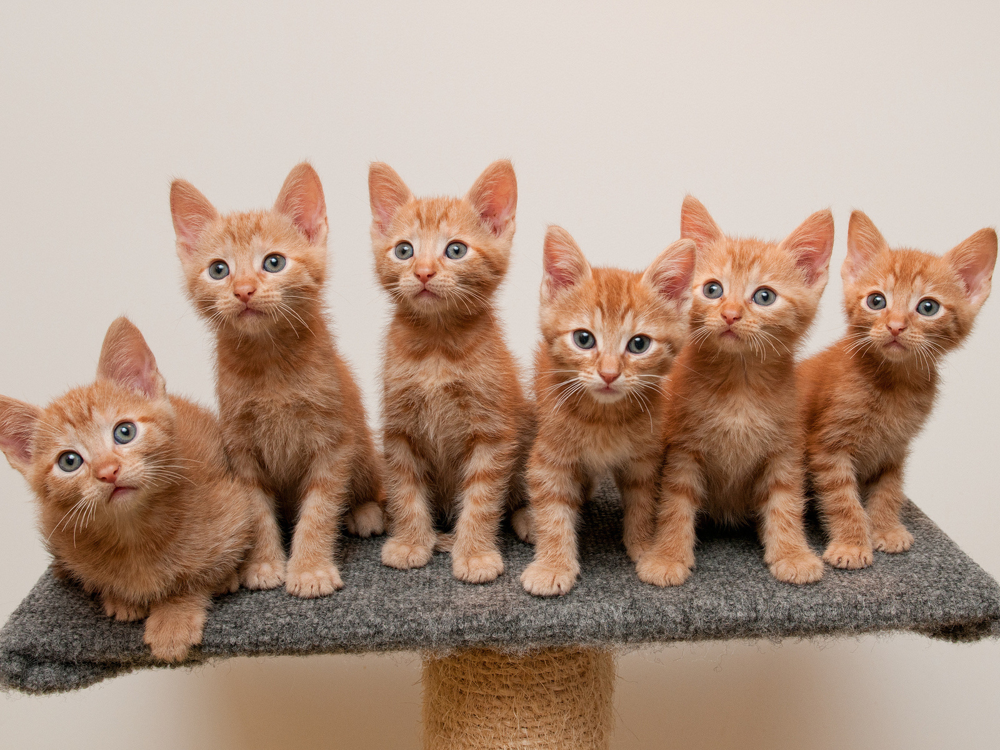
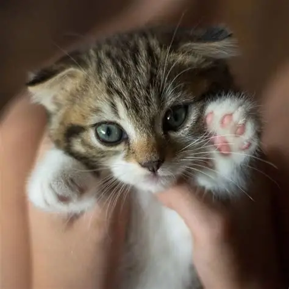
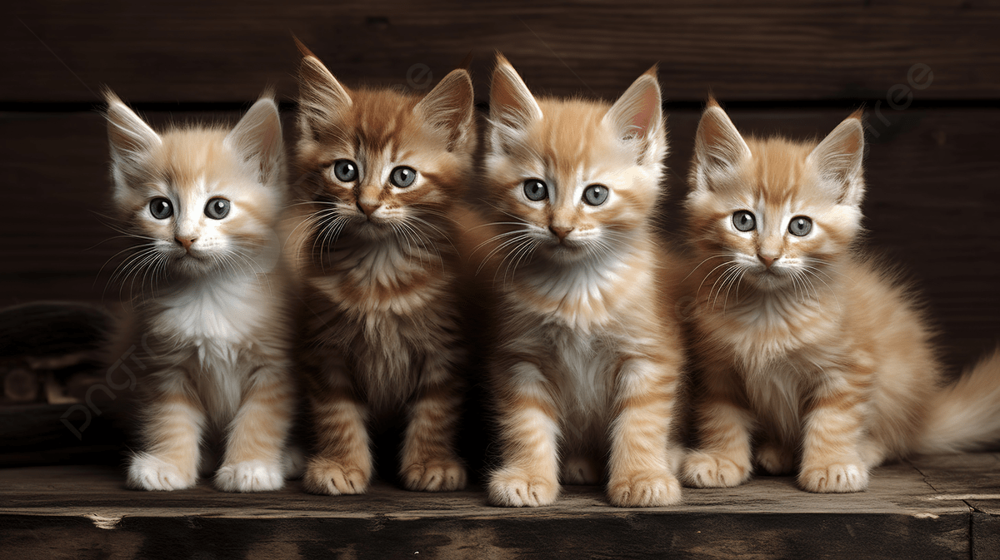
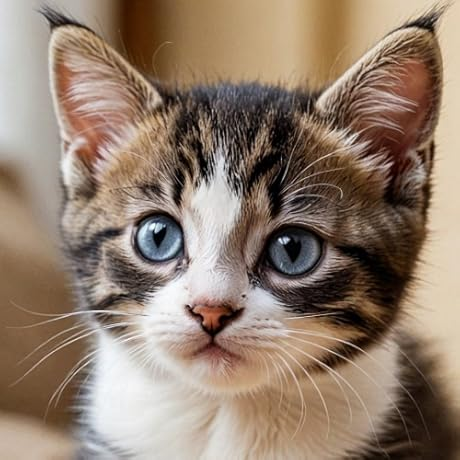
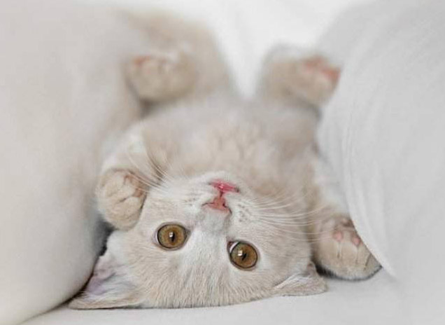
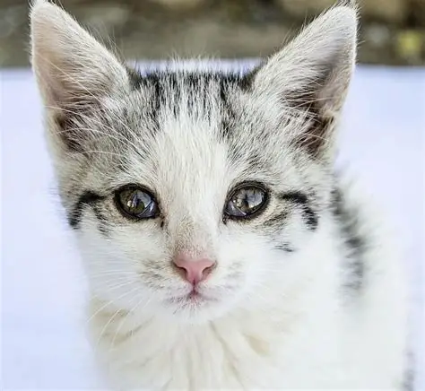

Un grupo de gatitos naranjas posa juntos.Sus expresiones curiosas y tiernas transmiten tranquilidad y dulzura.

Un pequeño gatito de ojos claros levanta su patita mientras es sostenido suavemente. La imagen refleja ternura y delicadeza.

Cuatro gatitos están sentados sobre una mesa de madera. El ambiente cálido y acogedor resalta su aspecto adorable.

Gatito atigrado de mirada profunda y ojos celestes. Su rostro refleja curiosidad, dulzura y asombro por el mundo.

Pequeño gatito color arena con sus ojos brillantes, irradia una sensación de absoluta confianza, calma y pura ternura.

Gatito blanco con manchas mira fijamente a la cámara con sus grandes ojos brillantes. Su expresión transmite ternura e inocencia.
Un grupo de gatitos naranjas posa juntos.Sus expresiones curiosas y tiernas transmiten tranquilidad y dulzura.
Gatito blanco con manchas mira fijamente a la cámara con sus grandes ojos brillantes. Su expresión transmite ternura e inocencia.